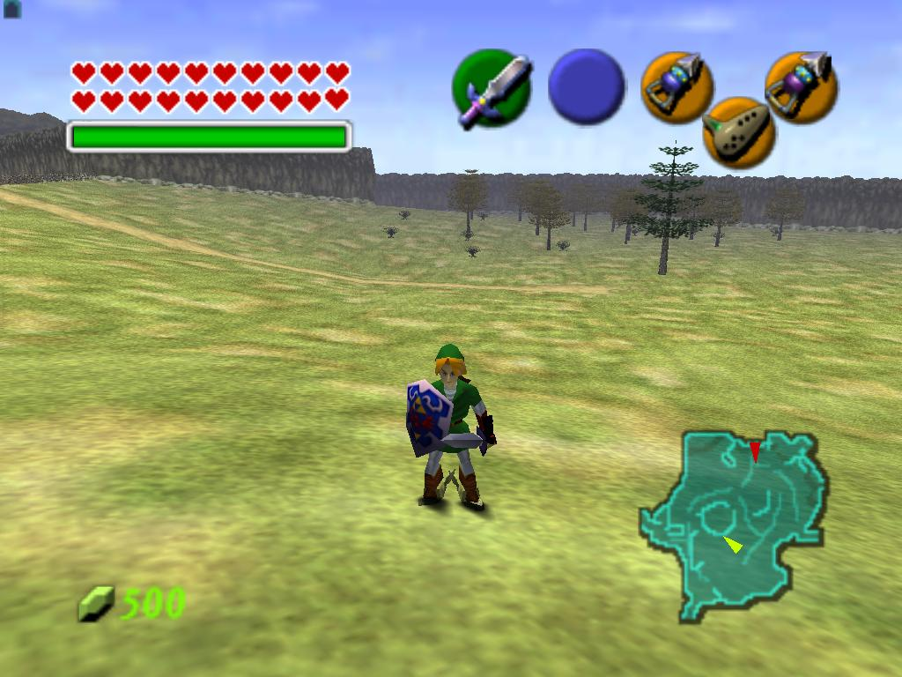

La Nintendo 64 es la cuarta videoconsola de sobremesa producida por Nintendo, desarrollada para suceder a la Super Nintendo y para competir con el Saturn de Sega y la PlayStation de Sony. Incorpora en su arquitectura un procesador principal de 64 bits. El soporte de almacenamiento de los juegos es en forma de cartuchos, la mayoría de ellos con memoria interna. El uso de este tipo de almacenamiento le supuso una seria desventaja comercial frente a sus competidores, ya que encarecía los costes de producción lo que aumentaba el precio final, y además, era de una capacidad de almacenamiento menor al de un CD-ROM. Sin embargo los cartuchos tienen unas ventajas las cuales permiten unos tiempos de acceso al sistema mas rápidos y permiten una ampliacion de sus capacidades mediante ampliaciones de chips que lograban ampliar su vida útil.
El Nintendo 64 incluyó en sus mandos unos botones dispuestos en cruz diseñados especialmente para que el usuario tomara el control de aspectos propios de juegos basados en entornos tridimensionales (el control de la perspectiva de juego o cámaras, por ejemplo), los cuales fueron utilizados por primera vez por el juego Super Mario 64.
Y en 2002 fue descontinuada por su sucesora Game Cube la cual emepezó a distribuirse en 2001.
Características
UNIDAD CENTRAL
CPU: Arquitectura MIPS 64-bit RISC CPU R4300i (serie R4000 personalizada), a 93,75 MHz
Co-procesador: RCP: SP (procesador de sonido y gráficos) y DP (procesador de píxeles) incorporados, a 62,5 MHz.
Resolución: 256 × 224 ~ 640 × 480 puntos, modo de desentrelazado sin parpadeo
Dimensiones: ancho 260 mm, fondo 190 mm, alto 73 mm.
Peso: 1,1 kg
Rendimiento: Con el microcódigo Fast3D oficial de Nintendo y SGi, 100.000 polígonos con mapeado de textura, iluminación, corrección de perspectiva, filtrado tri-lineal, anti-aliasing y buffer Z por segundo. El rendimiento baja a 50.000 si el mapeado era de doble textura. Teóricamente el rendimiento sin filtros de ninguna clase era de 500.000 polígonos con mapeado de textura (con una calidad de imagen similar a PlayStation).3
Conexiones y puertos:
Puertos para control (4 mandos)
Puerto de expansión de memoria RDRAM EXPANSION PAK
Ranura de cartuchos de juego
Bahía de extensión 50 pins
Entrada de corriente DC 12V/3.3V
MEMORIA
Memoria: RAMBUS D-RAM 4 Mbytes (Ampliable a 8 Mbytes mediante Expansion Pak), velocidad de transmisión: 4,500 Mbit/sec, máximo frecuencia 500 Mhz.

VIDEO
Procesador de video (GPU): Búfer Z, anti-aliasing (filtro anti-dentado), mapeado de texturas realista: interpolación de mapas MIP tri-lineal filtrada, corrección de perspectiva, mapeado del entorno.
Color: color real de imágenes fotográficas (puede mostrar 16 800 000 colores en pantalla) paleta de 32 bits, salida de vídeo en color de 21 bits.